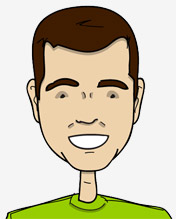
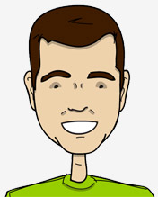
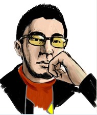
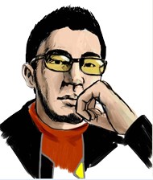
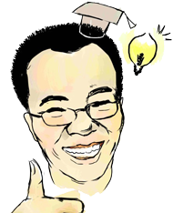
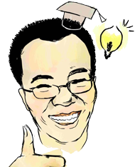
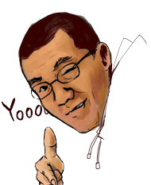
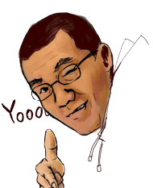

Fei is an engineering student in HKUST. Inspired by Google Docs in a graduation event, he gathered outstanding engineers that he knew to build up this site. Having done some projects before, he simply and sometimes naively believed that he and his teammates were building the next Facebook. After excellent performance of his teammates, he now regards this as an opportunity to learn CSS. He likes this team and hope everyone enjoys this site!
 

Guanlun is a junior in computer science student at HKUST. In Postiles he is mainly responsible for backend construction but from time to time he also hacks frontend code, often end up messing it up
He is a minimalist guy who would always try to keep things simple, except for the code he’s been producing at Postiles, which takes others teammates ages to understand.
In his spare time he enjoys swimming. His personal blog is at weaver-at-work.com.
 

Tao LI is a junior major in computer science in HKUST, he is keen on new technology and awesome ideas. He loves the great idea o's Postile and this enthusiastic team.
He is now mainly responsible for server configuration, maintance and the coordination between the front end system and the backend system.

Kong Xiangzhou always expect himself to be a diverting guy, as he is the youngest member in the team (too young).
He is doing frontend works including JavaScript framework, CSS and other issues. Also, he has a great performance in eating up other team member's snack.
 

Billy is an HKUST graduate, the originator of the ideas of Postiles.com and the oldest member of the team.
He is a versatile perfectionist, an adherent of quality and a difference maker who strives for the best of the best. My interdisciplinary background exposed me to all of the finance, data mining and computer science. Obsessiveness to design and my picky tastes drive him to search for aesthetical UI and convenient UX for Postiles.com.
Our team sincerely hopes that you may enjoy the experience in Postiles.com